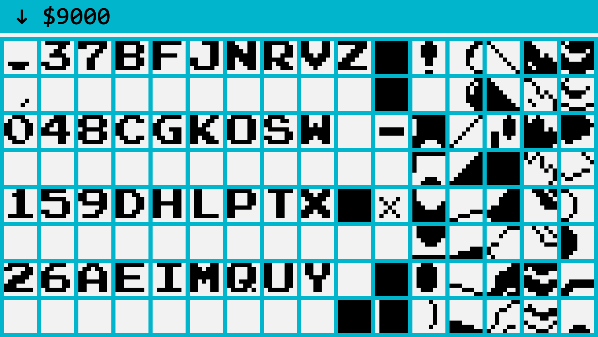

The fonts in NES games are usually build up by 8x8 bytes per character. By plotting the binary data, the graphic tiles become visible and the font is exposed. If you know where the font data is located, you can draw the characters into a UFO and generate a fully working font.
Here is the graphic data set of Super Mario Bros.
In this game the type is monochome, so there is only one layer. Very
convenient, the font clearly visible, and extracting is easy.
For extracting the font, a few parameters are needed:
> the byte where the font starts
> order of characters
Quite often there is a blank character between letters in the rom. I think
this is because one is the foreground layer and the next is the background (or
vise versa). For now, I just skip every second character.
The sprites
The sprite order in these images is: top to bottom, left to right.
Starting at $9000, the next 128 sprites look like this.

Let’s ignore the very first 2 sprites; starting with the zero.
The glyph order is: "0123456789ABCDEFGHIJKLMNOPQRSTUVWXYZ ".
Notice the space at the end.
Than some sprites we don’t care about, these can be ignored with an
@-symbol.
The final glyph order look like:
glyphOrder = "0123456789ABCDEFGHIJKLMNOPQRSTUVWXYZ @@@-×@!"
So now we know where the font starts: $9000 + 2*$8 = $9010 and we have the
glyphOrder.
Draw the font
Since it is all pixels, we need a pixelSize: pixelSize = 100.
Let’s loop through the glyphOrder and add a glyph to the font. The glyphName
we can get from the glyphNameFormatter module.
Starting at $9010, we fetch a byte and draw pixels in the glyph. Every glyph
is 8 bytes. And.. that is all.
The most work is finding out where the font-characters are. And define the
glyphOrder. Sometimes the fonts is not in one place and is scattered in the
data. An addGlyph(byte, glyphName) would be handy. But, ‘I leave that
as an exercise’.
Goodies
Here are some scripts:
> DrawRom.py
> NESFonter.py
I can not provide the actual rom files of course.
The End
You made it all the way to the bottom! If you have any feedback
on my tutorial, please get in digitally-touch. I am new to these kind of
tutorial / instructions I want to learn to do better. Find my mail within the
scripts.
Thanks, Thom